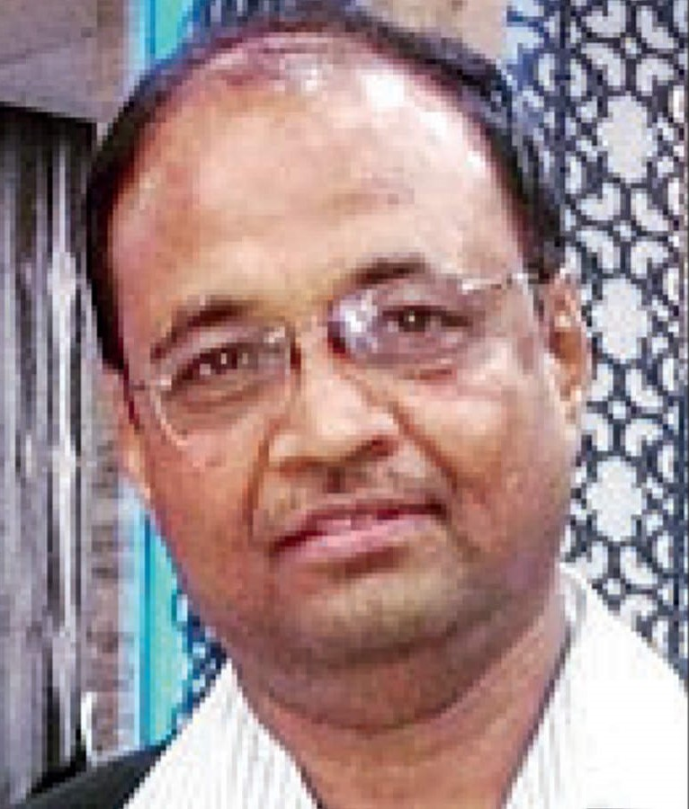
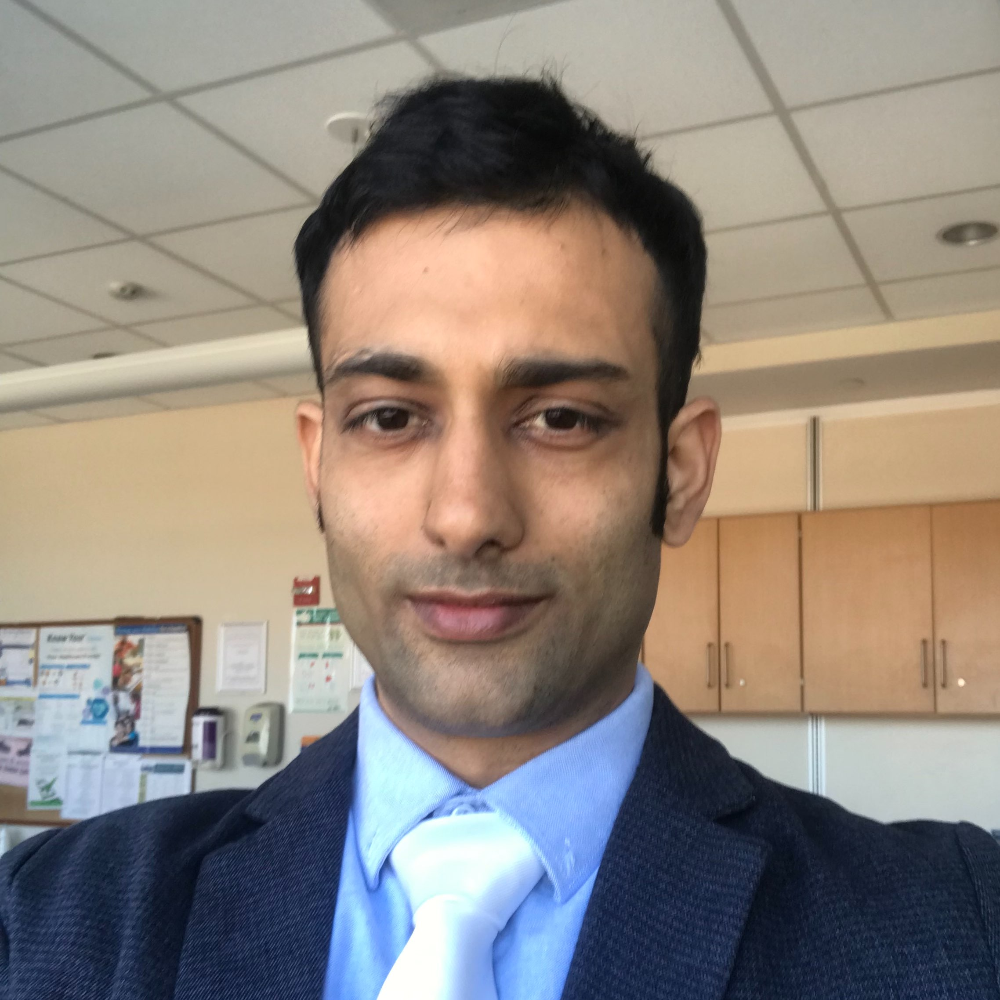

Dr. Rohidas Borse
Professor at B.J.Medical College, Pune
Senior doctor Rohidas Borse treating the COVID-19 positive patients at the Dr. Naidu hospital in Pune who found his mention Prime Minister Narendra Modi's 'Mann Ki Baat' said that the PM's words of appreciation was a morale booster to the doctors treating Coronavirus patients.
Talking to AIR, Dr. Borse said that the team in which he has been associated with to treat the COVID-19 positive patients has successfully treated seven people out the 16 admitted and they have been discharged as well.
Read more....
The condition of remaining nine is also stable, he said, adding that those patients will also be discharged soon. Dr. Borse said that those who show mild symptoms of the disease should also get them treated immediately. Others should undergo home quarantine and take necessary precautions, he added.
He further said that the instructions given by the government to maintain social distancing and stay indoors should be strictly followed for the next 15 days as there is a likelihood that there will be a rise in COVID-19 patients.
Dr. Uma Madhusudana
M.D.
The ‘Drive of Honour’ was performed in front of the house of Dr. Uma Madhusudan, a Mysuru-based doctor who is treating COVID-19 patients in South Windsor Hospital in the USA.
The local neighbourhood in the USA honoured her and the video of the ‘Drive of Honour’ has gone viral. In the video, several Police vehicles, fire brigade trucks and private vehicles can be seen going past through her house with sirens and honks blowing.Read more....
A convoy of at least 100 vehicles drove past Dr. Madhusudan’s house stopping by for a few seconds and thanking her.
As the global coronavirus crisis deepens, doctors across the world are being hailed as heroes and saviours, putting their own lives at risk to protect that of others. Dr. Uma Madhusudan is a 1990 batch graduate from JSS Medical College, a constituent college of JSS Academy of Higher Education and Research, Mysuru. Dr. Uma works at South Windsor Hospital.
The ‘Drive of Honour’ video has been shared by Karnataka Medical education Minister Dr. Sudhakar on Twitter.
Watch video here.

Dr. Amish Vyas
Plastic Surgeon
Amish Vyas, who is a native of Ratlam, Madhya Pradesh, is currently living in Hangzhou in southeast China with his wife and daughter, works at suspected quarantine camp for suspected coronavirus sufferers.Read more....
He said, “As a doctor, I am not afraid of any kind of infection or anything. It is my duty. I have even treated the patients having more serious, complicated diseases. So, I think, in this situation, most of the doctors, most of the surgeons, have the same feeling I have. Nobody is afraid of anything.”
Watch video here.